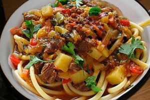

Мясо домашней индейки — диетический, деликатесный продукт, отличающийся превосходными вкусовыми качествами и высокой усвояемостью. Мышцы составляют около 50 % массы тушки. В съедобной части мяса индейки содержится от 8,5 до 15,3 % жиров, от 20,2 до 24 % белков. Масса взрослой индейки достигает 9 кг, а индюка — 16 кг, самые крупные бывают и до 20 кг.
Из индеек готовят вкусные супы и холодные бульоны. Для этих блюд используют обычно тушки недостаточно упитанной или старой птицы.
Хорошо подрумяненная, покрытая золотистой корочкой жареная тушка упитанной индейки является украшением праздничного стола.
Особый вкус салатам придают кусочки жареной или отварной индейки. Из потрохов, крылышек, горла, головки и ножек индейки можно приготовить вкусные заливные блюда.
Индейка отварнаяПодготовленную индейку варить в подсоленной воде до полуготовности. Затем добавить спассерованные коренья, подрумяненный лук и продолжать варить. Сваренную до мягкости индейку вынуть из отвара, разделить на части, положить на блюдо, украсить овощами из отвара, полить слегка бульоном, посыпать рубленой зеленью петрушки. Подать с гарниром из овощей и компотом из яблок или брусники.
Индейка — 1 шт. (1–1,2 кг), коренья — 200 г, лук репчатый — 50 г, петрушка (зелень), соль.
Индейка отварная с соусомПодготовленную тушку нарезать на порционные куски, положить в кипящую воду, снять пену. Варить на слабом огне до полной готовности (молодую птицу — 1–1,2 часа, старую — до 3 часов). Соль, коренья, лук добавить приблизительно за полчаса до окончания варки. Готовое мясо выложить на блюдо и полить бульоном. Отдельно подать соус. Для его приготовления прогреть муку в масле или птичьем жире, затем добавить 3–4 стакана бульона, проварить или приправить сливками, смешать с рубленой зеленью. Гарнировать отварным рисом, картофелем или макаронами, картофельным пюре, тушеной морковью и горохом, отварной фасолью, цветной капустой или стручками паприки. Отдельно подать салат из сырых овощей.
Индейка — 1 шт., вода — 2–3 л, лук репчатый — 1 шт., петрушка (корни) — 2 шт., морковь — 1 шт., масло сливочное (или жир птичий) — 2 ст. ложки, сливки — 2 ст. ложки, укроп, петрушка (зелень), соль.
Индейка отварная под белым соусом с рисомПодготовленную индейку отварить, разрезать на порционные куски. Отдельно на крепком бульоне приготовить белый соус с яичным желтком. При подаче к столу порцию горячей индейки положить в глубокое блюдо, а рядом с птицей — рассыпчатую рисовую кашу, сваренную на бульоне (рис припущенный), вареные стручки фасоли, заправленные маслом. Полить индейку соусом. Украсить листиками салата или веточкой зелени петрушки.
Индейка — 1 шт., соус белый (с яичными желтками), рис — 1 кг, масло сливочное — 100 г.
Индейка, тушенная в белом винеМясо индейки помыть, посолить, поперчить и нашпиговать тонко нарезанными кусочками сала. Лук мелко нарезать и спассеровать в смеси сливочного и растительного масла. Положить на лук мясо и быстро обжарить с обеих сторон до мягкости, затем добавить мелко нарезанные морковь и цветную капусту, еще немного потушить вместе с мясом. Подать с рисом, картофелем или овощным салатом.
Индейка — 1 кг (4 порции мяса), масло сливочное — 50 г, вино белое сухое — 0,5 л, масло растительное — 1 ст. ложка, сало свиное соленое — 20 г, морковь — 1 шт., капуста цветная — 0,5 кг, лук репчатый — 1 шт., петрушка (зелень), перец черный молотый, соль.
Индейка в фольгеМясо индейки нарезать на порционные куски и положить их на фольгу. Каждый кусок посыпать мелко нарезанными овощами и приправами и положить сверху кусочек масла или немного сметаны. Осенью можно добавить также свежие помидоры. Все продукты завернуть в фольгу так, чтобы во время запекания жидкость не вытекала. Завернутые в фольгу куски мяса положить на противень и запекать в духовке при температуре 200 °C 40–50 минут, бройлеры — 20–30 минут. Перед тем как вынуть мясо из духовки, надо попробовать иглой, готово ли оно. На стол подать вместе с фольгой, чтобы мясо находилось в образовавшемся после запекания соусе. Гарнировать отварным рисом или картофелем и салатом из сырых овощей.
Индейка — 800 г, сок лимонный (или пюре томатное) — 1 ст. ложка, лук репчатый — 1 шт., петрушка (зелень) — 2 ст. ложки, петрушка (корень тертый) —1 ч. ложка, масло сливочное (или сметана) — 2 ст. ложки, перец черный молотый, соль.
Котлеты из индейкиОтделить мякоть от костей и сухожилий, пропустить через мясорубку, смешать с отжатой мякотью белого хлеба, размоченного в молоке, вторично пропустить через мясорубку, посолить, добавить разогретое сливочное масло и тщательно перемешать, подливая молоко, в котором вымачивался хлеб, до получения однородной не очень густой массы (котлеты получатся нежнее, если вместо молока добавить сливки). Полученный фарш разделать на мокрой доске в виде небольших овальных котлет. Каждую котлету обвалять в молотых белых сухарях. Подготовленные котлеты обжарить в масле с обеих сторон на разогретой сковороде на небольшом огне до образования корочки. После этого сковороду с котлетами поставить минут на 5 в духовку или накрыть крышкой и оставить на очень слабом огне на 5–10 минут.
Мясо индюшатины (мякоть) — 0,5 кг, хлеб белый (без корочки) — 100 г, молоко (или сливки) —0,5 стакана, масло сливочное — 100 г, сухари молотые —0,5 стакана, соль.